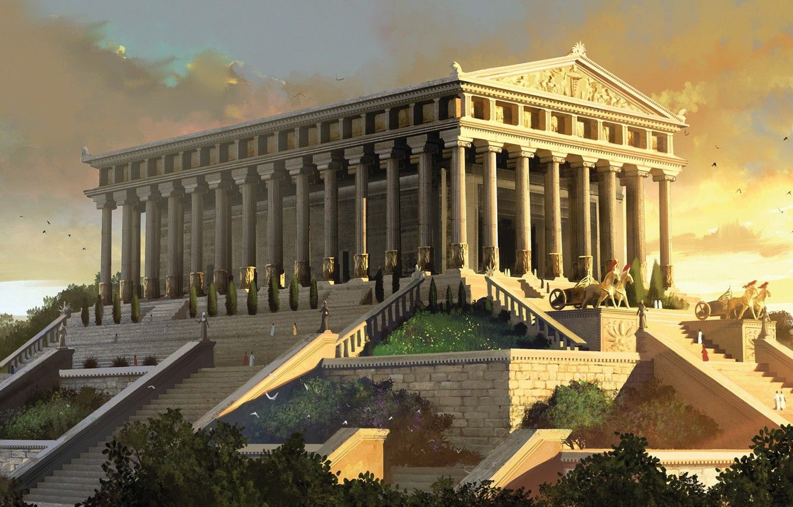
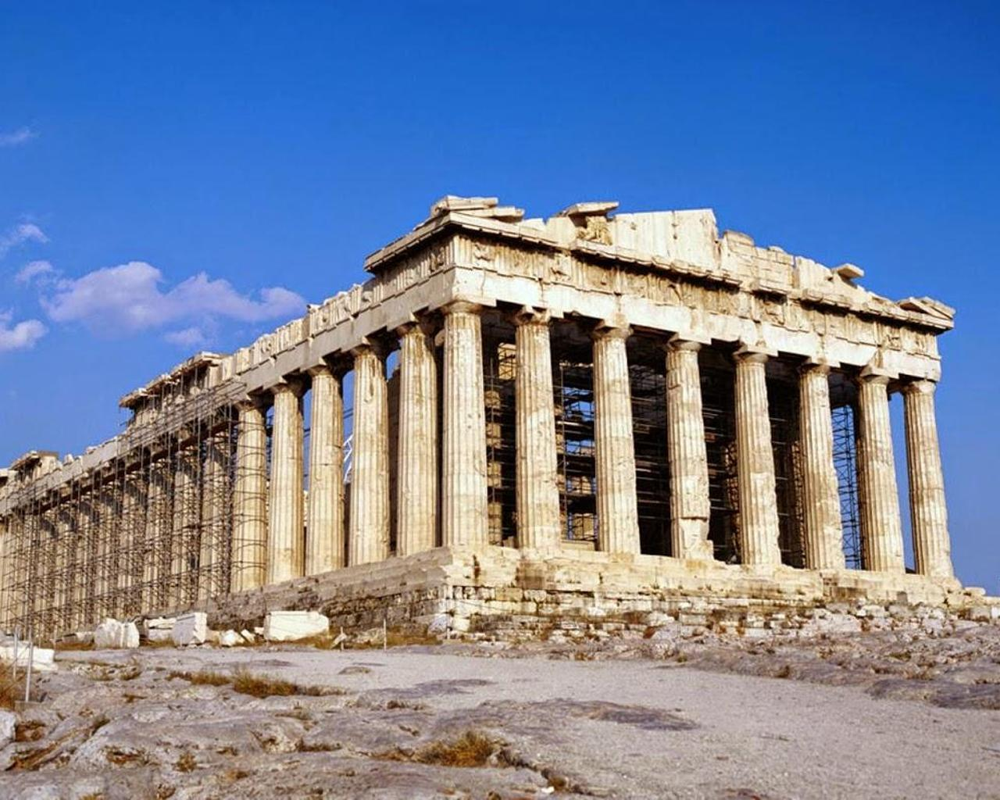
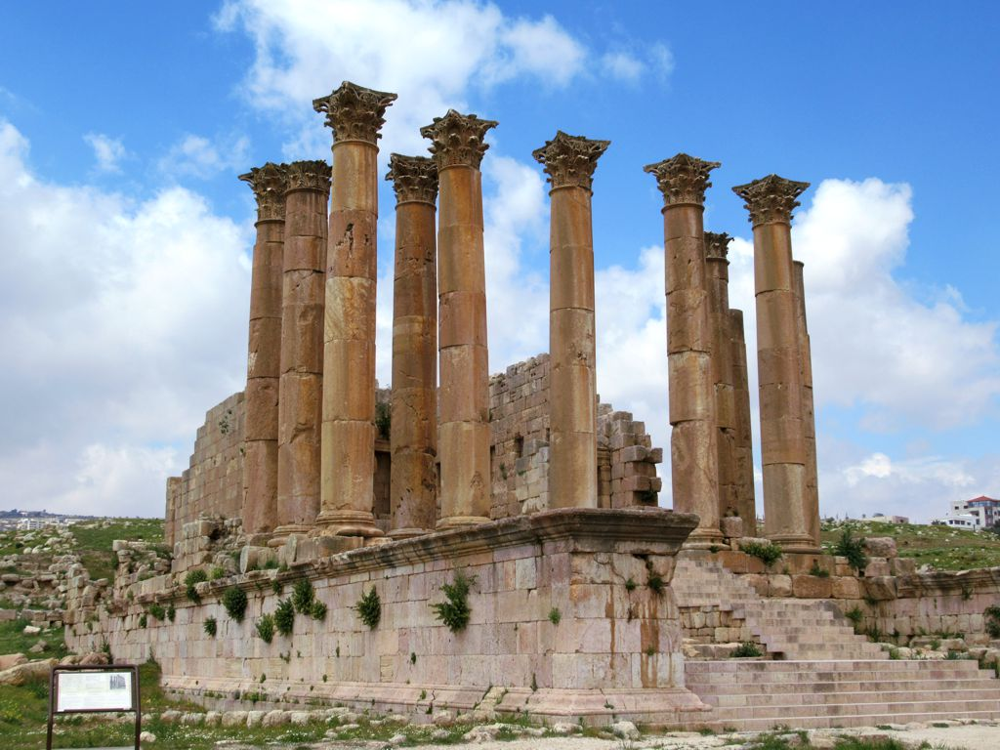
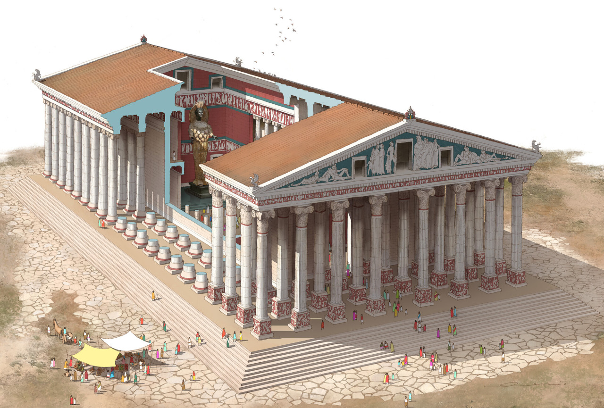
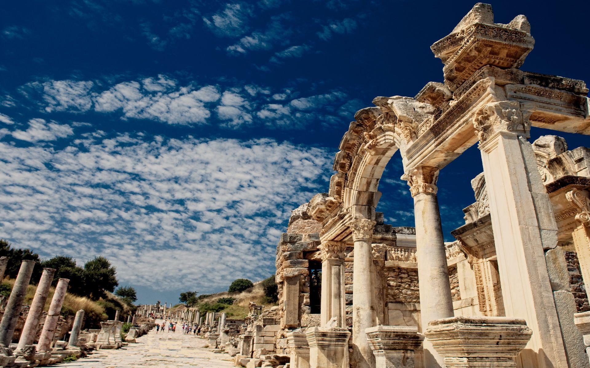

-
Храм Артемиды Эфесской
-





Храм Артеми́ды в Эфе́се, или Артемисион (др.-греч. Ἀρτεμίσιον; тур.
Artemis Tapınağı), известный также как Храм Диа́ны — одно из Семи чудес античного мира, греческий храм,
посвящённый местному культу богини Артемиды (соответствует римской богине Диане). Находился в греческом городе
Эфесе на побережье Малой Азии, в настоящее время — около города Сельчук на юге провинции Измир, Турция.
Храм пережил несколько жизненных циклов. Самая ранняя версия храма (теменос) датируется ещё бронзовым веком.
Александрийский учёный и поэт Каллимах в своём «Гимне Артемиде» приписывал его сооружение амазонкам. В VII веке до
нашей эры этот храм был разрушен наводнением. Затем около 550 года до н. э. началась реконструкция, а
фактически — сооружение нового, куда большего по размерам храма, которое вёл знаменитый зодчий Херсифрон вместе с
сыном Метагеном. Строительство этого храма длилось около двух веков и было завершено около 380 года до н. э.
архитекторами Деметрием и Пеонием. В 356 году до н. э. храм был сожжён Геростратом, но через некоторое время
восстановлен. Последняя версия храма, на восстановление которого выделил средства Александр Македонский,
описана в труде Антипатра Сидонского «Семь чудес света»:
Я увидел стену возвышенного Вавилона, по которой идет дорога для колесниц, и статую Зевса у Алфея, и висячие сады,
и колосса Родосского, и огромный труд высоких пирамид, и обширную гробницу Мавсола; но когда я увидел дом
Артемиды, который поднялся к облакам, эти другие чудеса потеряли свой блеск, и я сказал: «Вот, кроме Олимпа,
Солнце нигде не выглядело так великолепно».
В IV веке н. э. храм был закрыт в связи с провозглашением христианства государственной религией Римской империи и
разрушен. В настоящее время на этом месте сохранились только фрагменты последнего храма.